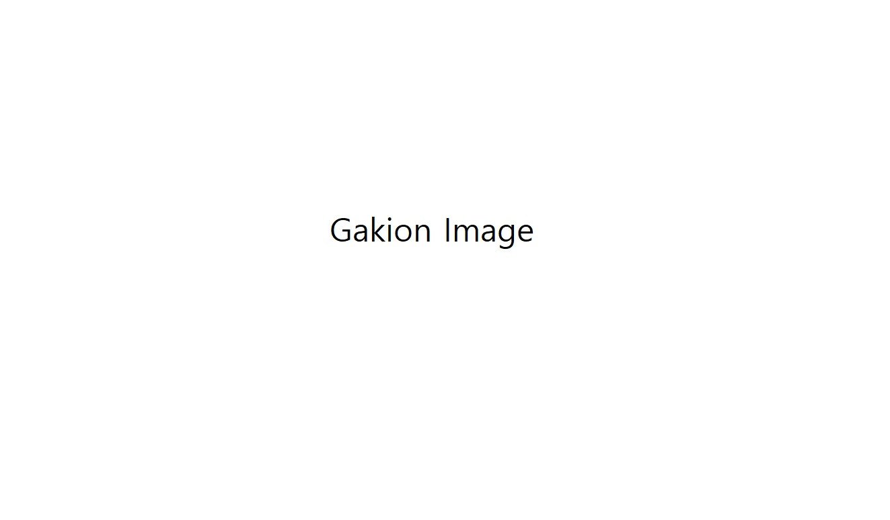

CV

Born and raised in Seoul, Gakion studied motion graphics, and later explored picture book illustration at Si Picturebook. She seeks to leave subtle traces of emotion in works through contrast and quiet space. Her works aim to tell weighty stories with a gentle touch through the language of picture book.
Education
- Si Picturebook, 38th Term
- Kookmin University — B.A. in Entertainment of Design
Awards
- Finalist, Bologna Children's Book Fair Illustrators Exhibition 2026
- Finalist, Golden Pinwheel Young Illustrators Competition 2025
Publications
- Fox Dream, Somebooks, 2026
- Dear My Black Dog, Maum’s Forest, 2019
Professional Experience
- Konkuk University — Lecturer (2025–Present)
- NCSOFT, Devsisters, CJ ENM — Motion Graphic Designer